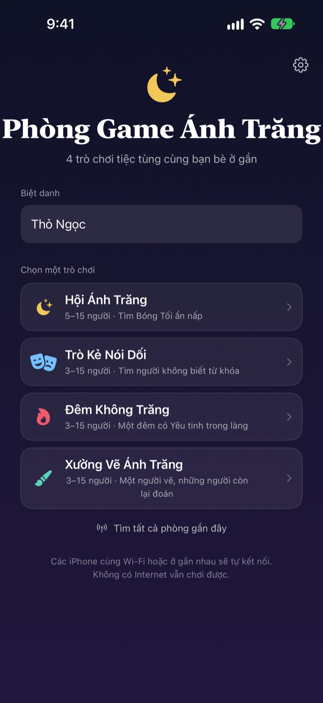
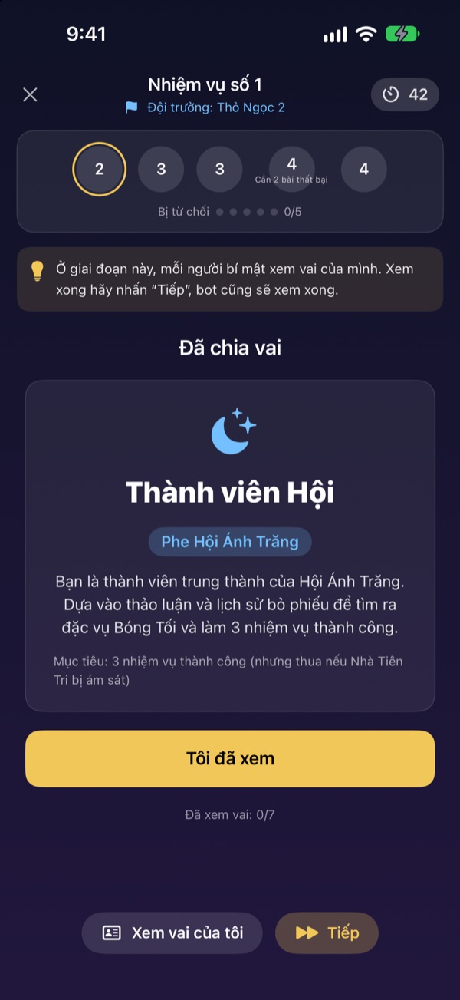
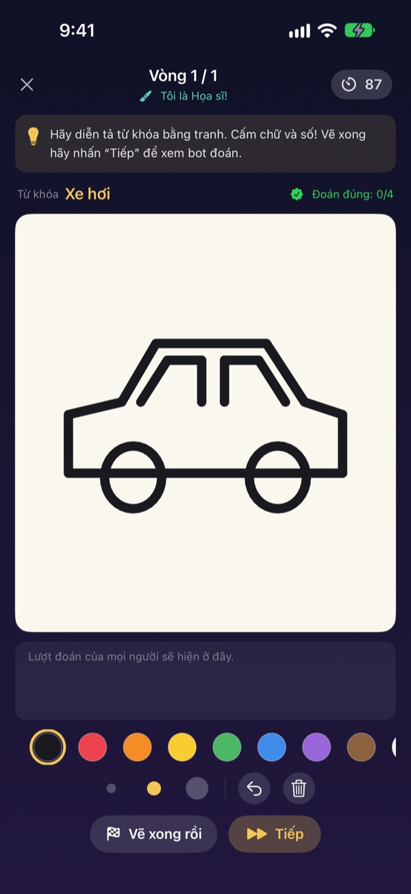
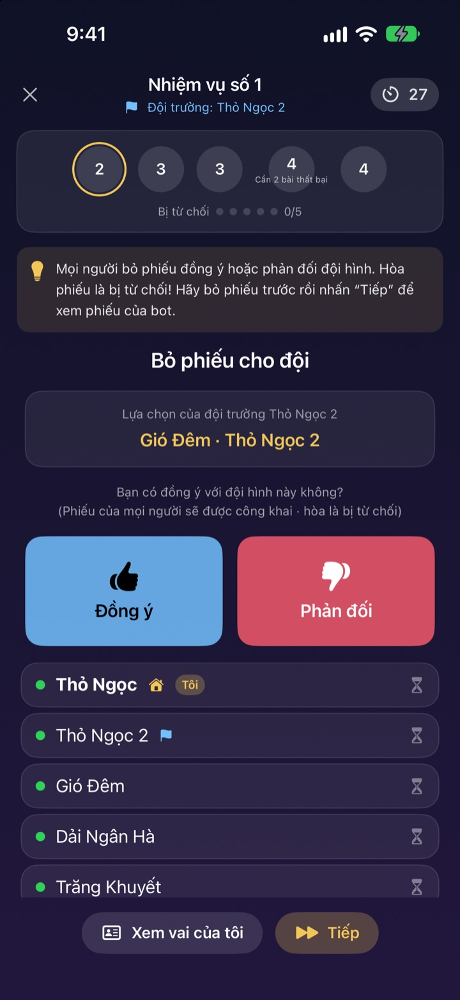

Đủ người rồi?
Lấy iPhone ra thôi.
Một người tạo phòng, những người ở gần vào chỉ trong vài giây. Vai và từ khóa bí mật chỉ hiện trên màn hình của từng người: không cần thẻ bài, cũng không ai phải ngồi ngoài làm quản trò.
Mọi trò chơi đều miễn phí. Không cần tài khoản hay Internet.

Chơi thử một ván Kẻ Nói Dối
Hãy tưởng tượng có năm chiếc iPhone trên bàn và chạm vào từng chiếc để xem. Chỉ một người không biết từ khóa. Bạn cũng có thể chuyền màn hình cho bạn bè cùng chơi.
Đông đủ cả rồi mà chẳng biết chơi gì
Họp lớp, đi chơi xa, Tết sum họp gia đình. Chơi Ma Sói thì phải có người đứng ngoài làm quản trò, còn giấy gấp thì chẳng bao giờ kín hẳn. Ở homestay Wi-Fi yếu, game online cũng chịu. Phòng Game Ánh Trăng để iPhone lo việc quản trò, chia vai và kết nối.
Vai của bạn chỉ có trên màn hình của bạn
Khi bắt đầu, mỗi iPhone nhận vai hoặc từ khóa riêng. Không phải chia bài, không cần “mọi người nhắm mắt”.
Lúc bỏ phiếu chỉ thấy ai đã bỏ phiếu. Ai bầu cho ai được giữ bí mật đến lúc công bố.

Bốn trò cho mọi nhóm bạn
Trò Kẻ Nói Dối đấu bằng tài ăn nói, Hội Ánh Trăng truy tìm Bóng Tối qua nhiệm vụ và bỏ phiếu, Đêm Không Trăng tìm Yêu tinh chỉ trong một đêm, còn Xưởng Vẽ Ánh Trăng để một người vẽ, cả nhóm đoán.
Hội Ánh Trăng từ 5 người, các trò còn lại từ 3, tất cả tối đa 15.

Trò mới? Vài phút là nắm
Mỗi trò có chế độ Cách chơi, bạn chơi một ván cùng bot theo từng bước. Đọc gợi ý phía trên rồi chạm Tiếp.
Nếu ứng dụng bị tắt hay mất kết nối, chạm Chơi tiếp ở màn hình chính là quay lại đúng ván cũ.

Bắt đầu với 3 bước
- 1
Chọn biệt danh và trò chơi
Mọi người mở ứng dụng, nhập biệt danh và chọn trò.
- 2
Tạo hoặc vào phòng
Một người tạo phòng, những người khác tìm qua Tìm phòng gần đây.
- 3
Chủ phòng bắt đầu
Khi đủ người, chủ phòng chạm Bắt đầu. Phần còn lại để ứng dụng lo.
Bốn trò chơi
- Trò Kẻ Nói Dối · 3–15 người
- Mọi người nhận cùng một từ, trừ một người. Lần lượt mô tả rồi bỏ phiếu tìm Kẻ Nói Dối. Bị bắt mà đoán đúng từ khóa thì Kẻ Nói Dối vẫn thắng.
- Hội Ánh Trăng · 5–15 người
- Tìm ra Bóng Tối ẩn trong Hội. Thủ lĩnh chọn đội làm nhiệm vụ, cả nhóm bỏ phiếu đồng ý hay không, rồi đội bí mật chọn thành công hoặc thất bại. Phe nào giành ba nhiệm vụ trước sẽ thắng.
- Đêm Không Trăng · 3–15 người
- Một đêm duy nhất, có Yêu tinh trà trộn trong làng. Ban đêm, Pháp sư, Kẻ trộm đêm và Kẻ tinh nghịch hành động bí mật. Trời sáng thì thảo luận và chỉ có một lần bỏ phiếu để tìm Yêu tinh.
- Xưởng Vẽ Ánh Trăng · 3–15 người
- Một người vẽ từ khóa, những người khác đoán trong khung chat. Đoán càng nhanh càng nhiều điểm, và người vẽ được điểm cho mỗi lượt đoán đúng.
Trò nào cũng có thể chơi thử một mình với bot trước trong chế độ Cách chơi.
Câu hỏi thường gặp
Không thấy phòng.
Kiểm tra chủ phòng và người chơi có cùng Wi-Fi hoặc ở gần nhau không. Cần bật Phòng Game Ánh Trăng trong Cài đặt ▸ Quyền riêng tư & Bảo mật ▸ Mạng cục bộ thì mới tìm được thiết bị ở gần. Bật cả Wi-Fi và Bluetooth sẽ kết nối ổn định nhất.
Có bắt buộc cho phép truy cập mạng cục bộ không?
Có. Ứng dụng cần quyền này để tìm và kết nối với iPhone ở gần. Nếu lỡ chạm Không cho phép, bạn bật lại trong Cài đặt ▸ Quyền riêng tư & Bảo mật ▸ Mạng cục bộ.
Đang chơi thì mất kết nối.
Mở lại ứng dụng và chạm Chơi tiếp ở màn hình chính để về đúng phòng, đúng ván. Vai và điểm vẫn còn nguyên. Nếu lâu không vào lại được, hãy tham gia lại từ danh sách phòng.
Có người không phản hồi, ván bị đứng.
Chủ phòng có thể mời người không phản hồi ra bất cứ lúc nào, ván sẽ tính lại với những người còn lại và chơi tiếp. Chế độ chủ phòng GM còn bỏ qua được bước bị kẹt.
Cần ít nhất bao nhiêu người?
Hội Ánh Trăng cần 5 người. Trò Kẻ Nói Dối, Đêm Không Trăng và Xưởng Vẽ Ánh Trăng bắt đầu từ 3. Tất cả tối đa 15. Thiếu người thì cứ học luật với bot trong chế độ Cách chơi trước.
Có cần Internet hay tài khoản không?
Không. Không đăng ký, không đăng nhập, không cần Internet. Các iPhone ở gần kết nối trực tiếp, dữ liệu ván chơi không bao giờ gửi lên máy chủ.
Có thể chơi thử một mình trước không?
Được. Chọn trò rồi chọn Cách chơi (luyện tập với bot). Bot sẽ vào phòng và bạn chơi trọn một ván theo từng bước.
Báo lỗi hoặc góp ý ở đâu?
Gửi ngay trong ứng dụng ở Cài đặt (bánh răng) ▸ Hỗ trợ, hoặc gửi thư đến địa chỉ bên dưới. Chúng tôi sẽ trả lời sớm nhất có thể.
Báo lỗi, góp ý hay hỏi gì khác, hãy gửi thư đến mizzking75@gmail.com.